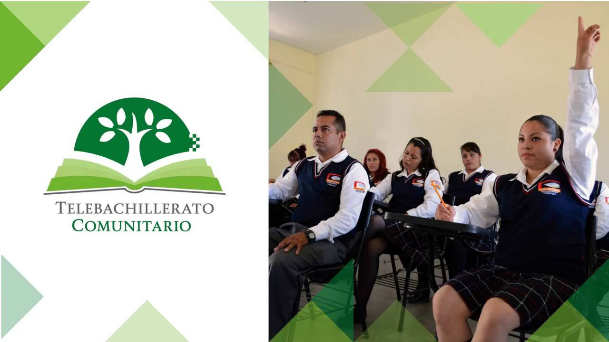
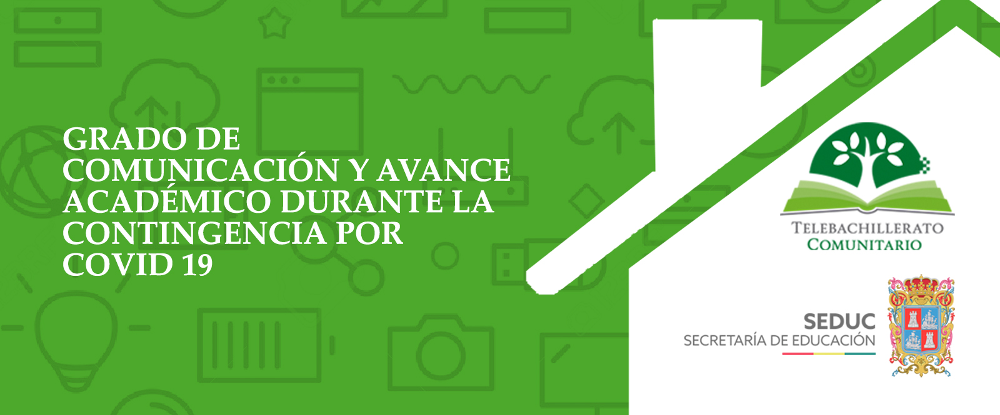

Escuela Telebachilletato Comunitario


BIENVENIDOS
Los Telebachilleratos Comunitarios son una opción educativa creada por la Secretaría de Educación Pública (SEP) para ofrecer servicios de Educación Media Superior a comunidades rurales más apartadas del país que cuentan con menos de 2,500 habitantes, y que no disponen de servicio de bachillerato en un radio de 5 kilómetros.
Los Telebachilleratos Comunitarios garantizan un modelo educativo incluyente; permiten ahorrar tiempo y gastos de transporte a los estudiantes, lo que facilita su aceptación en las comunidades; contribuye al aumento de la cobertura nacional con calidad; permite aprovechar la infraestructura ya establecida en las secundarias o telesecundarias.